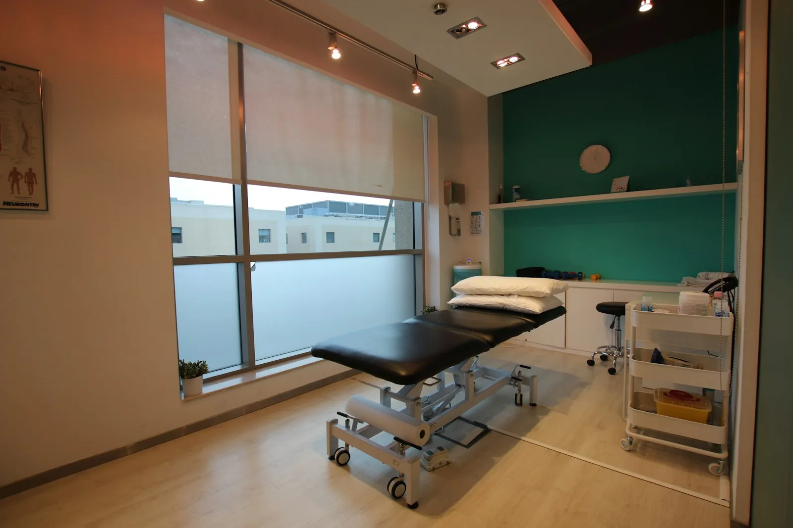

Volte a se mexer sem dor.

Do diagnóstico à alta
- Avaliação de 60 minutostestes, histórico e o que você quer voltar a fazer
- Plano por escritoquantas sessões, o que muda em cada fase
- Sessões individuais45 minutos com o mesmo fisioterapeuta
- Alta com exercíciosum programa para manter em casa